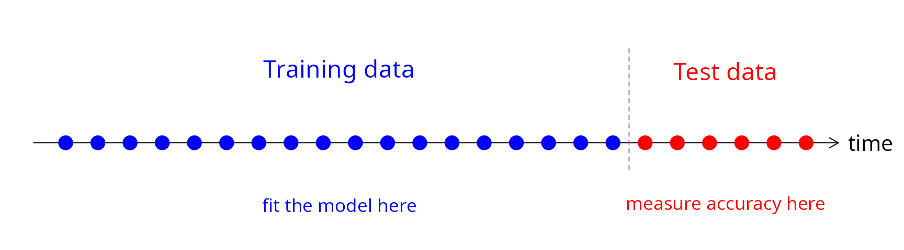
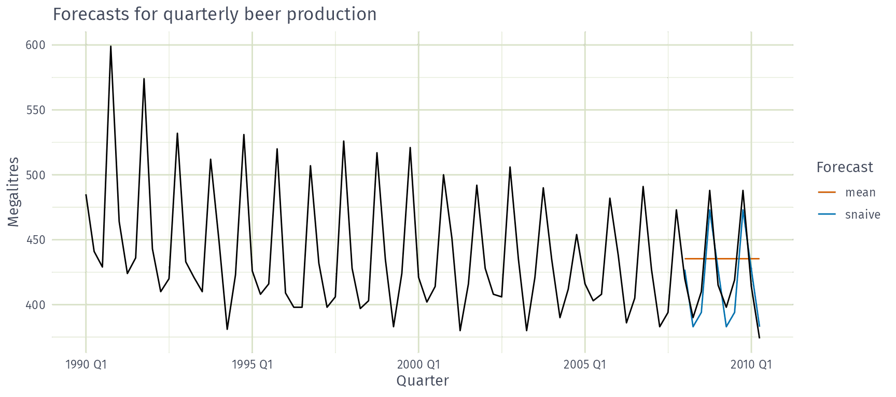
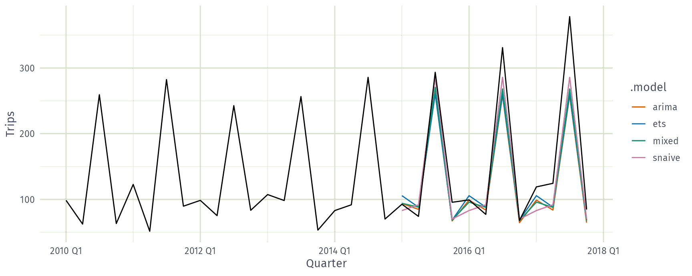

beer_fit <- aus_production |>
filter(between(year(Quarter), 1992, 2007)) |>
model(
snaive = SNAIVE(Beer),
mean = MEAN(Beer)
)
beer_fit |>
forecast(h = 10) |>
autoplot(filter(aus_production, year(Quarter) >= 1990), level = NULL) +
labs(
title = "Forecasts for quarterly beer production",
x = "Quarter", y = "Megalitres"
) +
guides(colour = guide_legend(title = "Forecast")) AFRICAST
AFRICASTTidy time series & forecasting in R
Basic training and test accuracy
Session 8 of 10


workshop.f4sg.org/africastForecasting for Social Good
Evaluating forecast accuracy
Evaluate forecast accuracy
- In order to evaluate the performance of a forecasting model, we compute its forecast accuracy.
- Forecast accuracy is compared by measuring errors based on the test set.
- Ideally, compare the benefit of improved accuracy with the cost of obtaining it.
Evaluate forecast accuracy: decision impact
Best forecast = best decisions
Choose the model whose forecasts lead to better decisions, such as:
- lower staffing costs
- lower emissions
- higher service levels
- fewer stock-outs
- less excess inventory
- faster response
- more stable plans
- Decision impact is often hard to measure.
- Fallback: choose the most accurate forecast.
Which error costs more?
In your work, which forecast error is more costly?
- Forecasting too high (waste, idle staff, excess stock)
- Forecasting too low (stock-outs, unmet need, overloaded services)
- About the same
- It depends on the situation
A perfect fit
A model fits the training data perfectly. Will it forecast well?
- Yes
- Not necessarily
- No
In-sample (training) vs. out-of-sample (test)
- Residuals (in-sample errors) are not a reliable indication of forecast accuracy
- A model which fits the training data well will not necessarily forecast well
- A perfect fit can always be obtained by using a model with enough parameters
- Over-fitting a model to data is just as bad as failing to identify a systematic pattern in the data
How long a test set?
You need forecasts 12 months ahead. What is the shortest sensible test set?
- 3 months
- 12 months
- 36 months
Forecast accuracy evaluation using test sets
- We mimic the real life situation
- We pretend we don’t know some part of data (new data)
- It must not be used for any aspect of model training
- Forecast accuracy is computed only based on the test set
- The test set should ideally be at least as long as the maximum forecast horizon
Training and test sets

Evaluating point forecast accuracy
Forecast errors
Forecast “error”: the difference between an observed value and its forecast. \[ e_{T+h} = y_{T+h} - \hat{y}_{T+h|T}, \] where
- the training data is \(\{y_1,\dots,y_T\}\)
- \(y_{T+h}\) is the \(h\)th test observation, \(h=1,\dots,H\)
- \(\hat{y}_{T+h|T}\) is its forecast based on data up to time \(T\)
Forecasting beer production
Forecasting beer production

Scale-dependent and percentage errors
\[\begin{aligned} \text{MAE} &= \text{mean}(|e_{T+h}|) \\ \text{MSE} &= \text{mean}(e_{T+h}^2) \\ \text{RMSE} &= \sqrt{\text{mean}(e_{T+h}^2)} \\ \text{MAPE} &= 100\,\text{mean}(|e_{T+h}|/|y_{T+h}|) \end{aligned}\]
- MAE, MSE, RMSE are all scale dependent.
- MAPE is scale independent but is only sensible if \(y_t\gg 0\) for all \(t\), and \(y\) has a natural zero.
Comparing across districts
You forecast clinic visits in 50 districts of very different sizes. Which measure lets you compare your method’s accuracy across all of them?
- RMSE
- MAE
- MASE
Scaled errors: MASE
Mean Absolute Scaled Error
\[ \Large \text{MASE} = \text{mean}(|e_{T+h}|/Q) \]
- For non-seasonal series, scale uses naïve forecasts:
\(Q = \frac{1}{T-1}\displaystyle\sum_{t=2}^T |y_{t}-y_{t-1}|\)
- For seasonal series, scale uses seasonal naïve forecasts:
\(Q = \frac{1}{T-m}\displaystyle\sum_{t=m+1}^T |y_{t}-y_{t-m}|\)
where \(m\) is the seasonal frequency, and \(Q\) is computed on the training data
Proposed by Hyndman and Koehler (IJF, 2006).
Slow-selling items
Which measure suits daily sales of a slow-selling item with many zero days?
- MAPE
- MASE
- Either
Scaled errors: RMSSE
Root Mean Squared Scaled Error
\[ \Large \text{RMSSE} = \sqrt{\text{mean}(e^2_{T+h}/Q)} \]
- For non-seasonal series, scale uses naïve forecasts:
\(Q = \frac{1}{T-1}\displaystyle\sum_{t=2}^T (y_{t}-y_{t-1})^2\)
- For seasonal series, scale uses seasonal naïve forecasts:
\(Q = \frac{1}{T-m}\displaystyle\sum_{t=m+1}^T (y_{t}-y_{t-m})^2\)
where \(m\) is the seasonal frequency, and \(Q\) is computed on the training data
Used in the M5 forecasting competition (Makridakis et al., IJF, 2022).
Test-set accuracy
# A tibble: 2 × 7
.model .type RMSE MAE MAPE MASE RMSSE
<chr> <chr> <dbl> <dbl> <dbl> <dbl> <dbl>
1 mean Test 38.4 34.8 8.28 2.20 1.96
2 snaive Test 14.3 13.4 3.17 0.847 0.729- Seasonal naïve beats the mean on every measure.
- Its MASE and RMSSE are below 1: smaller errors than in-sample seasonal naïve.
Evaluating distributional forecast accuracy
Prediction interval accuracy using Winkler score
Winkler (1972) proposed a scoring method to enable comparisons between prediction intervals:
- it takes account of both coverage and width of the intervals.
Winkler score
\[\begin{aligned} W(l_t,u_t,y_t) = \begin{cases} u_t-l_t & \text{if $l_t \le y_t \le u_t$}\\ (u_t-l_t)+ \frac{2}{\alpha}(l_t-y_t) & \text{if $y_t < l_t$}\\ (u_t-l_t) + \frac{2}{\alpha}(y_t-u_t) & \text{if $y_t > u_t$} \end{cases} \end{aligned}\]
where \([l_t, u_t]\) is a \(100(1-\alpha)\%\) prediction interval.
- Lower is better.
- Misses are penalised by \(2/\alpha\) times the distance outside the interval.
Prediction interval accuracy
# A tibble: 2 × 3
.model .type winkler
<chr> <chr> <dbl>
1 mean Test 174.
2 snaive Test 86.3- Winkler scores for 95% prediction intervals (\(\alpha = 0.05\)).
- Both cover every test observation, but seasonal naïve intervals are half as wide.
Quantile score
Quantile score
\[\begin{aligned} Q_{p,t} = \begin{cases} 2(1 - p) \big(f_{p,t} - y_{t}\big), & \text{if $y_{t} < f_{p,t}$}\\ 2p \big(y_{t} - f_{p,t}\big), & \text{if $y_{t} \ge f_{p,t}$} \end{cases} \end{aligned}\]
where \(f_{p,t}\) is the \(p\)-quantile of the forecast distribution for time \(t\).
- Lower is better.
Quantile score
# A tibble: 2 × 3
.model .type qs
<chr> <chr> <dbl>
1 mean Test 14.1
2 snaive Test 4.60- Quantile score of the 90th percentile forecasts (\(p = 0.9\)).
Continuous Ranked Probability Score (CRPS)
\[\large \text{CRPS} = \text{mean}(p_t),\]
where
\[p_t = \int_{-\infty}^{\infty} \left(G_t(x) - F_t(x)\right)^2dx\]
- \(G_t(x)\) is the forecast distribution function for time \(t\)
- \(F_t(x)\) is the observation’s distribution function: a step from 0 to 1 at \(y_t\)
- Lower is better; for a point forecast it reduces to the MAE.
CRPS: expected error less spread
- Equivalently, CRPS \(= \text{E}|X - y| - \tfrac{1}{2}\text{E}|X - X'|\), where \(X, X'\) are independent draws from \(G\).
- Expected distance from \(y\), less half the forecast’s spread.
CRPS: the gap between forecast and outcome
- CRPS adds up the squared gap (shaded) between the forecast \(G\) and the outcome \(F\).
- Mean away from \(y\), or spread too wide: larger. Lower is better.
Percentile score and CRPS
# A tibble: 2 × 4
.model .type percentile CRPS
<chr> <chr> <dbl> <dbl>
1 mean Test 22.7 22.4
2 snaive Test 8.80 8.71- Percentile score: quantile score averaged over \(p = 0.01, 0.02, \dots, 0.99\).
- Seasonal naïve has the better distributional forecasts on both measures.
Forecast ensembles
Forecast ensembles
- Fits three models to each of the 304 tourism series (this takes a while).
- Ensemble forecast
mixedis a simple average of the three fitted models. forecast()will produce distributional forecasts taking into account the correlations between the forecast errors of the component models.
Forecast ensembles

Forecast ensembles
Accuracy on the 2015–2017 test set, averaged across all series.
# A tibble: 4 × 3
.model RMSE MASE
<chr> <dbl> <dbl>
1 mixed 19.8 0.997
2 ets 20.2 1.00
3 snaive 21.5 1.17
4 arima 21.9 1.06 Averaging lets errors from different models partially cancel, and reduces the risk of picking the wrong model.